Vocabulary¶
Units¶
Gaussian Units¶
Gaussian unit is very useful in electrodynamics. Back to two equations used in SI unit system to define some standard units,
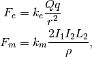
where we have the two constants defined as  and
and  .
.
The idea of Gaussian unit is as simple as setting 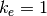 and  . The consequences are, however,
. The consequences are, however,
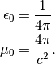
These two equalities are the most useful ones to help us switch between SI and Gaussian.
Math¶
Vector Analysis¶
A lot of vector analysis equations will be deployed in this subject. The way to quickly prove a vector or tensor relation is to write down the component form, mess with the orders and use some specific relations.
One of the most useful symbol involved is Levi Civita symbol, which has a relation with the Kronecker delta,

As an example, we consider the case  , the determinant reduces to
, the determinant reduces to
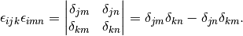
This relation is useful in many situations.
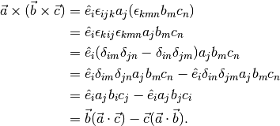
Integrals¶
Gaussian integral is
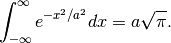
To calculate higher orders we can use parity and derivitives.
 are odd function thus
are odd function thus

For those 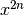 we can use this derivative trick,

E & M¶
- Static E field and B field,
- Scalar potential and vector potential,
- Multipole expansion,
- Force of objects in E field and B field, both for arbitary field and each multipoles,
- Torque of objects in E field and B field, both for arbitary field and each multipoles.
Radiation Pressure¶
There are many ways to understand the pressure produced by light. In classical electrodynamics, we have the momentum current density, electromagnetic stress tensor, surface current density and quantum as the tools.
These are three different levels of the phenomenon.
Momentum current density is

Pressure is force per unit area or momentum change per unit time per unit area. Momentum change, meanwhile, is momentum current density times volume.
To carry out in the language of math, the volume in time  and on area
and on area  is given by
is given by  , where c is the speed of light. Here we used c because we are basically considering the process in vacuum.
, where c is the speed of light. Here we used c because we are basically considering the process in vacuum.
Pressure is given by

The next step is to plug in the momentu current density and calculate the difference. Here we calculate an example.
Suppose we have our incident wave normal to the surface of perfect reflection. The wave has

Finally the radiation pressure becomes
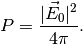
On the surface of metal, electromagnetic waves could induce surface current which in return interacts with the magnetic component in the electromagnetic wave thus producing radiation pressure.
Surface current induced is calculated using
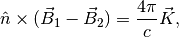
in which 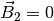 since it is the magnetic field inside the good conductor.
The force is given by

The average of magnetic field is the key point here. The reason behind this 1/2 factor is that infact only half of the magnetic field outside of the conductor is the original part while the other half is induced by the surface current density however the  includes all the magnetic field outside.
includes all the magnetic field outside.
The pressure is
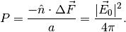
Due to conservation law, we have
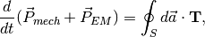
which says the energy stress tensor integrated over a close surface on the interface of metal is the change in the momentum of mechanical part and electromagnetic part in total.
By using the monochromatic wave expression we can find the pressure.
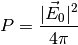